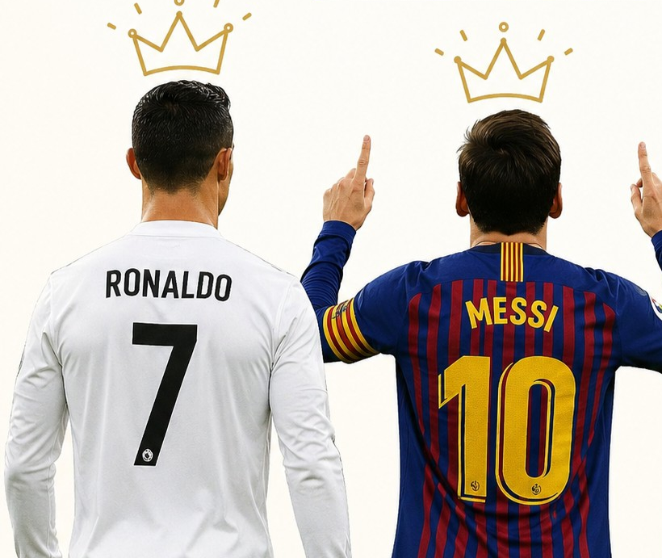

El Rey es...

Reyes de fútbol
Pocas discusiones en la historia del deporte han generado tanto debate como la comparación entre Lionel Messi y Cristiano Ronaldo. Durante más de quince años, ambos dominaron el fútbol mundial con una constancia y un nivel de excelencia sin precedentes, rompiendo récords, ganando títulos y redefiniendo los estándares de rendimiento individual. Su rivalidad trascendió clubes, ligas y selecciones nacionales, convirtiéndose en un fenómeno global que marcó una era y cautivó a millones de aficionados alrededor del mundo.
 Aunque los dos comparten una capacidad extraordinaria para marcar diferencias dentro del campo, sus estilos de juego son muy distintos. Cristiano Ronaldo se consolidó como un goleador excepcional, reconocido por su potencia física, capacidad aérea, definición y mentalidad competitiva. Messi, en cambio, destacó por su técnica, visión de juego, regate, creatividad y habilidad para influir en prácticamente todas las fases del juego ofensivo. Estas diferencias hacen que la comparación entre ambos vaya mucho más allá del simple número de goles anotados.
Para analizar de manera objetiva quién tuvo un mayor impacto en la historia del fútbol, es necesario examinar diversos aspectos de sus carreras, como los goles, las asistencias, el desempeño individual, las contribuciones al juego colectivo, los récords, los premios y los títulos obtenidos tanto a nivel de clubes como de selecciones nacionales. Solo mediante una evaluación integral de estos elementos es posible comprender las fortalezas de cada jugador y valorar la magnitud de sus logros dentro de una de las rivalidades más importantes que ha presenciado el deporte moderno.
Aunque los dos comparten una capacidad extraordinaria para marcar diferencias dentro del campo, sus estilos de juego son muy distintos. Cristiano Ronaldo se consolidó como un goleador excepcional, reconocido por su potencia física, capacidad aérea, definición y mentalidad competitiva. Messi, en cambio, destacó por su técnica, visión de juego, regate, creatividad y habilidad para influir en prácticamente todas las fases del juego ofensivo. Estas diferencias hacen que la comparación entre ambos vaya mucho más allá del simple número de goles anotados.
Para analizar de manera objetiva quién tuvo un mayor impacto en la historia del fútbol, es necesario examinar diversos aspectos de sus carreras, como los goles, las asistencias, el desempeño individual, las contribuciones al juego colectivo, los récords, los premios y los títulos obtenidos tanto a nivel de clubes como de selecciones nacionales. Solo mediante una evaluación integral de estos elementos es posible comprender las fortalezas de cada jugador y valorar la magnitud de sus logros dentro de una de las rivalidades más importantes que ha presenciado el deporte moderno.